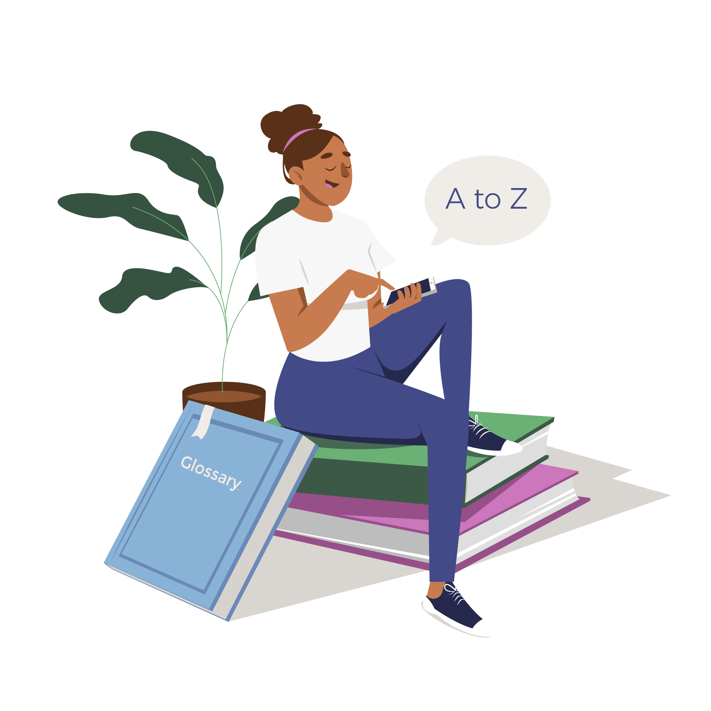

Como criar o hábito da leitura
Defina um tempo para ler: Reserve um tempo específico todos os dias para a leitura. Pode ser antes de dormir, durante o café da manhã ou em qualquer outro momento que funcione melhor para você.
Escolha livros que você goste: Comece com livros que realmente lhe interessam. Isso tornará o hábito mais agradável e menos uma obrigação.
Estabeleça metas: Defina metas de leitura, como ler um determinado número de páginas por dia ou um livro por mês. Isso pode ajudar a manter a motivação.
Participe de Clube de Leitura: Participar de um clube do livro pode proporcionar um senso de comunidade e compromisso, além de oferecer a oportunidade de discutir e explorar diferentes perspectivas sobre as leituras.